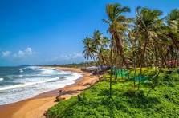

About Goa
Goa, located on India’s western coast, is famous for its sun-kissed beaches, vibrant nightlife, Portuguese heritage, and laid-back lifestyle.
It’s a perfect blend of natural beauty, adventure, and cultural charm, making it one of India’s top tourist destinations.
Why Visit?
- Relax on beautiful beaches like Baga, Anjuna, and Palolem.
- Enjoy water sports like parasailing, jet skiing, and scuba diving.
- Explore Portuguese churches and forts (Basilica of Bom Jesus, Fort Aguada).
- Experience Goan nightlife, beach parties, and casinos.
- Taste delicious Goan seafood and feni (local drink).
Location & Travel
Nearest Airport: Goa International Airport (Dabolim) ~29 km from Panaji.
Nearest Railway Stations: Madgaon (South Goa), Thivim (North Goa).
Well connected by road and flight from Mumbai, Pune, Bangalore, Hyderabad, and Delhi.
Visiting Details
- Best Time to Visit: November to February (pleasant weather & festivals).
- Peak Season: December – New Year parties & Sunburn Festival.
- Monsoon Season: June to September (lush greenery, fewer crowds).
Average Travel Expense
A 3–5 day trip to Goa including food, stay, and transport can cost around:
- Budget: ₹3,500 – ₹5,000 per day
- Mid-range: ₹6,000 – ₹9,000 per day
- Luxury: ₹12,000+ per day
← Back to Home